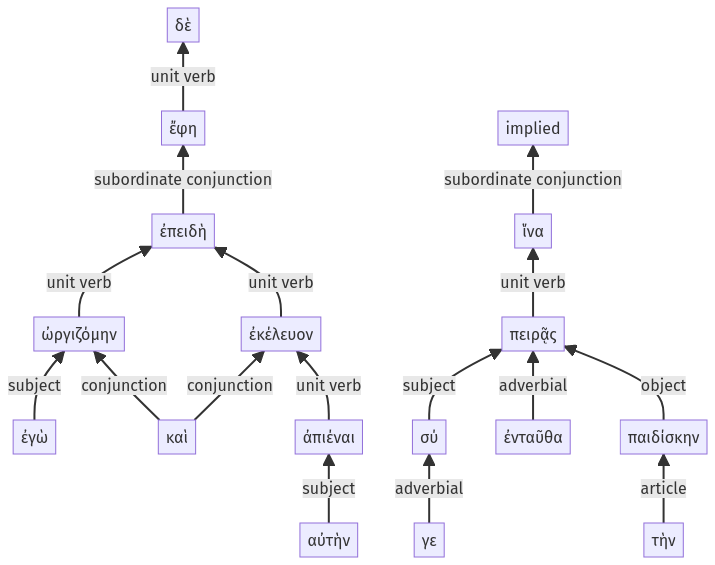

Lysias, Oration 1, 1.12.35-1.12.50a
1.12.20-1.12.34a | 1.12.51-1.12.56a
Sentence 27
1.12.35-1.12.50a
ἐπειδὴ δὲ ἐγὼ ὠργιζόμην καὶ ἐκέλευον αὐτὴν ἀπιέναι, "ἵνα σύ γε "ἔφη "πειρᾷς ἐνταῦθα τὴν παιδίσκην:
2 ἐπειδὴ ἐγὼ ὠργιζόμην
2 καὶ ἐκέλευον
3 αὐτὴν ἀπιέναι
2 ἵνα σύ γε
1 ἔφη
2 πειρᾷς ἐνταῦθα τὴν παιδίσκην
ἐπειδὴ δὲ ἐγὼ ὠργιζόμην καὶ ἐκέλευον αὐτὴν ἀπιέναι, "ἵνα σύ γε "ἔφη "πειρᾷς ἐνταῦθα τὴν παιδίσκην:
Highlighting:
- connecting words
- unit verb
- subject
- object
Color code:
- Independent clause (level 1, transitive verb)
- subordinate clause (level 2, transitive verb)
- subordinate clause (level 2, transitive verb)
- infinitive in indirect statement (level 3, intransitive verb)
- subordinate clause (level 2, transitive verb)
